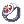

Kagi's PvP Guide for Guillotine Cross
Work In Progress
Introduction
Hi everyone, I'm kagi, I've been playing GX for one and a half year (and counting). I've played with Dusk guild and I wanted to share my experience to other people who are looking to play GX for PvP as well. I'm not the best GX in the server but I am confident about the information I have from playing GX for the past year and a half.
If you have any questions regarding GX feel free to hit me up on Discord (@kagi#6569)!
What does Guillotine Cross do?
Guillotine Cross, also known as GX, is a Ground Control job, they are the ones who deal with enemy divers who try to access your stack and cast their disables/debuffs on your teammates to hinder them. The most common divers that you will encounter are Suras and Shadow Chasers, although you will occasionally see other jobs that will try to dive your stack as well to try and get some sneaky kills or landing a quick debuff.
Stats
Stat distribution will be a bit tricky for GX because you need to have at least 189 ASPD (more is better), just from self buffs and external buffs. GX is very prone to dying because they are very fragile and the jobs you will be targeting have reflect skills such as Reject Sword and Crescent Elbow, and because of this, you will need to have enough stats to have 189 ASPD without relying on your guildmate's help.
Personally, this is my stat distribution:
- STR - 120
- AGI - 113
- VIT - 120
- INT - 1
- DEX - 11
- LUK - 120
You can try sacrificing some VIT for more AGI if you don't have enough to hit 189 ASPD.
NEVER invest points in DEX/INT unless they are excess points because you don't need those stats.
Skill Tree

My NovaEXT Settings
Your NovaEXT Settings are completely up to you, but you can take an idea from my settings.
I will try to constantly update this list every time I remember to add more skills.
Important Timers
In my opinion, it is a must to have these timers on your NovaEXT.
- Magnum Break - ID:2096
- Golden X - ID:1169
- Can time this along with the usage of Aloevera and Box of Sunlight.
- Odin - ID:583
- Striking - ID:445
Others
- Expiatio - ID:340
- Distorted Crescent - ID:657
- SC Masquerades
- Weakness - ID:418
- Ignorance - ID:411
- Strip Accessory - ID:421
My Restock List

Buffs
These are the buffs you should be keeping track of.
External buffs outside of castle (only for WoE)
In order to use external buffs, you will be logging in an alt account for buffing yourself before you go inside the castle. Park these characters outside of the castle (when you use the warper), or at your savepoint.
I will constantly update this list every time I remember/discover more buffs.
Important buffs to have
- Soul Reaper
- Shadow Soul
- Arch Bishop (if you're using the bypass build)
- Expiatio
- Odin
- Increase Agility
- Blessing
Optional buffs to have
- Oboro
- Distorted Crescent
- Note: When using Distorted Crescent, make sure your target (yourself) has even current HP, or else your target (yourself) will lose ATK.
- Distorted Crescent
Self buffs and consumables
Try to keep track of these buffs and make sure they're constantly up. (Prioritized from shortest to longest duration)
- Magnum Break
- Aloevera / Golden X / Box of Sunlight
- Weapon Block
- Enchant Deadly Poison
- Pyrexia
- Cursed Fragment Buff
- To get the ATK/MATK buff from Cursed Fragments, you have to keep using it until you get the I will never forgive you! dialogue.
Buffs to ask for from your guildmates
Ask for these buffs from your guildmates whenever they are free, please don't spam your guildies because buffing a GX is not their main priority. Their main priority is to defend the frontlines, not to buff the GX that's supposed to be self-reliant. Having these other buffs are only good to have, not needed.
- Wanderer
- Swing Dance
- Fortune's Kiss
- Arch Bishop
- Odin
- Sorcerer
- Striking
Gears
These are the gears I use, and some alternatives.
Costume stones are disabled in Siege so you do not need them.
(Template copied from G1's guide LUL)
- Make sure to bring a second
 King Schmidt's Strong Insignia [1] with any enchant with a
King Schmidt's Strong Insignia [1] with any enchant with a  Marine Sphere Card for
Marine Sphere Card for  Magnum Break swap.
Magnum Break swap. - Bring a second
 Automatic Booster R [1] as well, with
Automatic Booster R [1] as well, with  Fatal Module,
Fatal Module,  ASPD Module and
ASPD Module and  Str Module or
Str Module or  All Force Module with
All Force Module with  Horong Card to use against Shadow Chasers, or any job that uses any stealth skill.
Horong Card to use against Shadow Chasers, or any job that uses any stealth skill.
Ice Pick Build
This build is not the best, in any means, at all, but I decided to put it here anyways as it's a decent alternative for people who can't find a good Metal Detector for the bypass build. Considering Ice Pick is relatively cheaper than Metal Detector with good enchants, not to mention the difficulty of finding a Metal Detector with good enchants for PvP.


Metal Detector Bypass Build
This build is the build you should be aiming for, as it is the one that deals the most damage currently.
- Note: If there's a Mechanic in your party and your Metal Detector is the same refine as your Glorious Flamberge, you can swap your Metal Detector to your main-hand, as the Mechanic will negate the size penalty of daggers because they will be constantly buffing theirself (and the party) with Weapon Perfection.


Defensive Swap
Make sure you always have this swap when you're playing GX. If you can't afford the set, you can always just opt for the free  Recruit's Set, obtainable from the NPC Rune Knight Manuel in @go bg
Recruit's Set, obtainable from the NPC Rune Knight Manuel in @go bg

| Equipment Type | Gear | Enchants | Cards | Alternatives |
|---|---|---|---|---|
| Upper Headgear |  +9 Defensive Cat Ear Beret [1] +9 Defensive Cat Ear Beret [1]
|
N/A |  Barricade Card or any elemental% reduction card. Barricade Card or any elemental% reduction card.
|
|
| Middle Headgear |  Challenger's Blindfold Challenger's Blindfold
|
N/A | N/A | |
| Lower Headgear |  Handkerchief in Mouth Handkerchief in Mouth
|
N/A | N/A | |
| Armor | +9 WoE Suits [1] | Any / Wind or Water Property |  Furious Ice Titan Card Furious Ice Titan Card
|
|
| Weapon (Main Hand) |  Combat Knife Combat Knife
|
 MDEF +4, MDEF +4 MDEF +4, MDEF +4
|
N/A | |
| Shield |  Purified Knight's Shield [1] Purified Knight's Shield [1]
|
MDEF or HP enchants (optional) |  Thara Frog Card Thara Frog Card
|
 Cursed Knight's Shield [1] or Cursed Knight's Shield [1] or  Valkyrja's Shield [1] if WoE Suits [1] is Wind Element Valkyrja's Shield [1] if WoE Suits [1] is Wind Element
|
| Garment | WoE Manteau [1] | Item Healing Rate% (optional) |  Raydric Card or any element% reduction card Raydric Card or any element% reduction card
|
|
| Shoe |  WoE Boots [1] WoE Boots [1]
|
Item Healing Rate% (optional) |  Green Ferus Card or if the shoes is +9, Green Ferus Card or if the shoes is +9,  Infinite Vocal Card Infinite Vocal Card
|
|
| Right Accessory |  Physical Enhancer Ring [1] or Magic Intensifier Ring [1] | All Elements Except Neutral Resistance +5-6% |  Furious Snowier Card Furious Snowier Card
|
|
| Left Accessory | Physical Enhancer Ring [1] or Magic Intensifier Ring [1] | All Elements Except Neutral Resistance +5-6% |  Prismatic Protection Card Prismatic Protection Card
|
|
| Shadow Armor |  +9 Warlord's Shadow Mail +9 Warlord's Shadow Mail
|
 +9 Medium Shadow Mail +9 Medium Shadow Mail
| ||
| Shadow Weapon |  +8~10 Tension Shadow Weapon +8~10 Tension Shadow Weapon
|
Can wear anything | ||
| Shadow Shield |  +9 Warlord's Shadow Shield +9 Warlord's Shadow Shield
|
 +9 Cranial Shadow Shield +9 Cranial Shadow Shield
| ||
| Shadow Shoes |  +9 Vital Shadow Shoes +9 Vital Shadow Shoes
|
Can wear anything | ||
| Shadow Pendant |  +5 Thief Shadow Bracer +5 Thief Shadow Bracer
|
Can wear anything | ||
| Shadow Ring |  +5 Thief Shadow Cufflinks +5 Thief Shadow Cufflinks
|
Can wear anything |